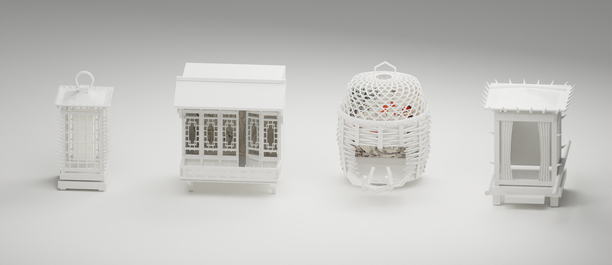

TEXT → DATA → MATTER → BODY
Invisible
Power.
Four stories. Four objects.
A feminist reading of classical Chinese ghost stories.

Preparing the exhibition…
THE QUESTION BEHIND THE EXHIBITION
Visible in the story.
Whose power in the language?
This project reads twelve classical Chinese ghost stories through feminist close reading and computational analysis. Descriptions, body parts and actions become clues to how women are represented — and to what automated sentiment analysis can overlook.
The original window and goose cage translate selected findings into physical constraints. The lantern and sedan chair extend that exhibition for the web; their thorn counts follow a different rule and are not comparable scores.
TWELVE STORIES / ONE READING ROOM
Read beyond the objects.
Follow the research vocabulary into each English story. Compare female descriptions, potential objectification, agency and discipline, then explore word-level and sentence-level sentiment.
Behind the objects.
Literature, data and the making of a bodily experience.